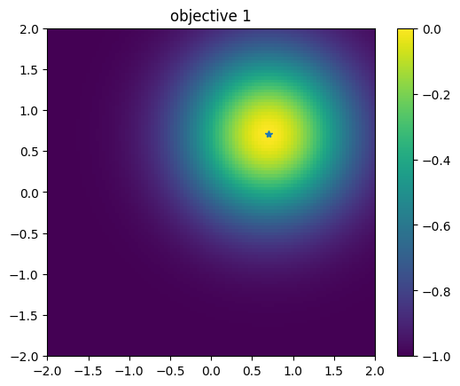
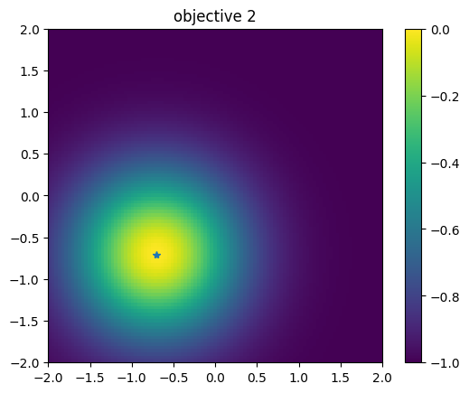
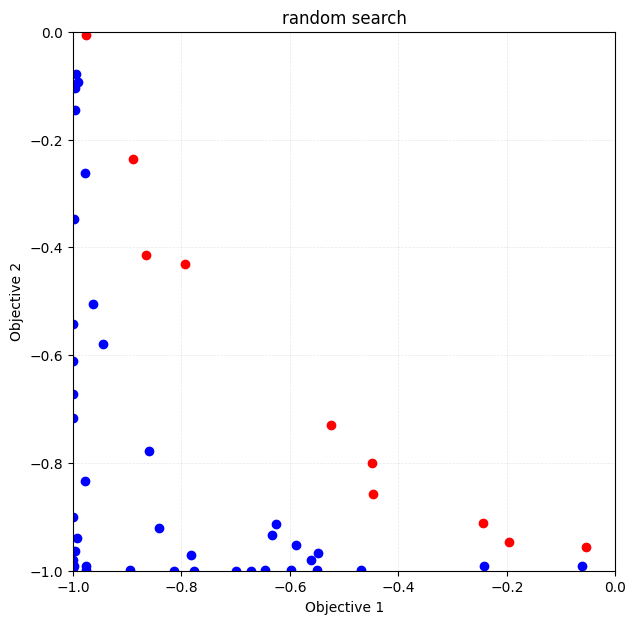
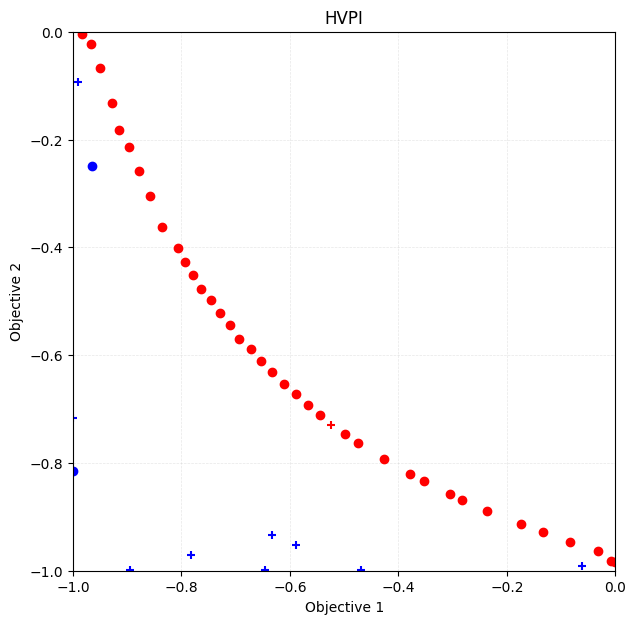
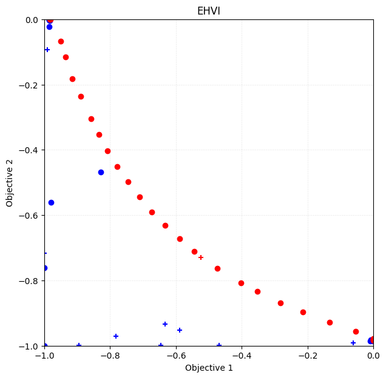
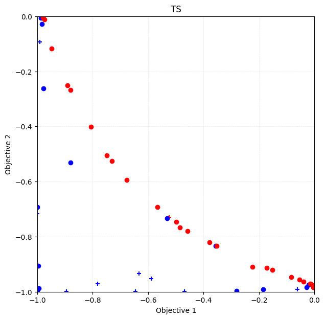
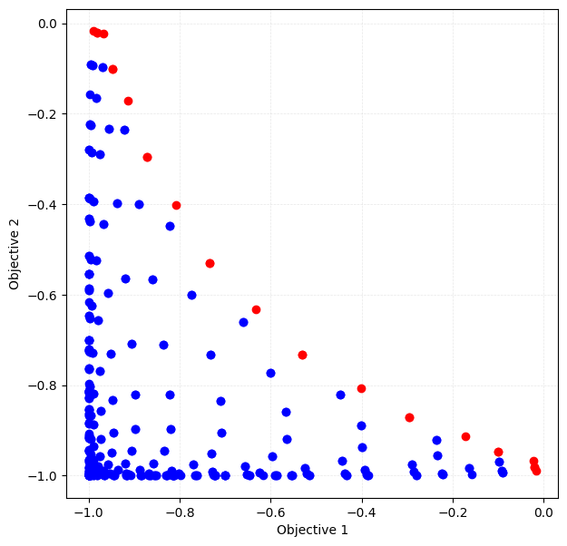

This jupyter notebook file is available at ISSP Data Repository (develop branch).
Multi-objective optimization
\(y \prec y^{'}\Longleftrightarrow \forall \ i \le p, y_i \le y^{'}_i \land \exists \ j \le p, y_j < y^{'}_j\)
PHYSBO implements a Bayesian optimization method to find Pareto solutions efficiently.
[1]:
import time
import numpy as np
import matplotlib.pyplot as plt
import physbo
%matplotlib inline
seed = 12345
num_random_search = 10
num_bayes_search = 40
Test functions
where \(y_1\) and \(y_2\) have minimums at \(x_1 = x_2 = \cdots x_N = 1/\sqrt{N}\) and \(x_1 = x_2 = \cdots x_N = -1/\sqrt{N}\), respectively, both of which are 0. Also, the upper bound is 1.
Since PHYSBO solves a maximization problem, the objective function is again multiplied by -1.
Refernce
Van Veldhuizen, David A. Multiobjective evolutionary algorithms: classifications, analyses, and new innovations. No. AFIT/DS/ENG/99-01. AIR FORCE INST OF TECH WRIGHT-PATTERSONAFB OH SCHOOL OF ENGINEERING, 1999.
[2]:
def vlmop2_minus(x):
n = x.shape[1]
y1 = 1 - np.exp(-1 * np.sum((x - 1/np.sqrt(n)) ** 2, axis = 1))
y2 = 1 - np.exp(-1 * np.sum((x + 1/np.sqrt(n)) ** 2, axis = 1))
return np.c_[-y1, -y2]
Preparation of search candidate data
Let the input space \(\vec{x}\) be two-dimensional, and generate a grid of candidate points on [-2, 2] × [-2, 2].
[3]:
min_X = np.array([-2.0, -2.0])
max_X = np.array([2.0, 2.0])
test_X = physbo.search.utility.make_grid(min_X=min_X, max_X=max_X, num_X=101)
[4]:
test_X
[4]:
array([[-2. , -2. ],
[-2. , -1.96],
[-2. , -1.92],
...,
[ 2. , 1.92],
[ 2. , 1.96],
[ 2. , 2. ]], shape=(10201, 2))
[5]:
test_X.shape
[5]:
(10201, 2)
Definition of simulator
[6]:
class Simulator(object):
def __init__(self, X):
self.t = vlmop2_minus(X)
def __call__( self, action):
return self.t[action]
[7]:
simu = Simulator(test_X)
Plotting the functions
Let’s plot each of the two objective functions. The first objective function has a peak in the upper right corner, and the second objective function has a trade-off with a peak in the lower left corner (The star is the position of the peak.).
First objective function
[8]:
plt.figure()
plt.imshow(simu.t[:,0].reshape((101,101)), vmin=-1.0, vmax=0.0, origin="lower", extent=[-2.0, 2.0, -2.0, 2.0])
plt.title("objective 1")
plt.colorbar()
plt.plot([1.0/np.sqrt(2.0)], [1.0/np.sqrt(2.0)], '*')
plt.show()

Second objective function
[9]:
# plot objective 2
plt.figure()
plt.imshow(simu.t[:,1].reshape((101,101)), vmin=-1.0, vmax=0.0, origin="lower", extent=[-2.0, 2.0, -2.0, 2.0])
plt.title("objective 2")
plt.colorbar()
plt.plot([-1.0/np.sqrt(2.0)], [-1.0/np.sqrt(2.0)], '*')
plt.show()

Performing optimizations.
Setting policy
physbo.search.discrete_multi.Policy for multi-objective optimization.num_objectives.[10]:
policy = physbo.search.discrete_multi.Policy(test_X=test_X, num_objectives=2)
policy.set_seed(seed)
As with the usual usage of physbo.search.discrete.Policy (with one objective function), optimization is done by calling the random_search or bayes_search methods. The basic API and usage are roughly the same as discrete.policy.
Random search
In this tutorial, we will perform 10 (num_random_search) random sampling steps and 40 (num_bayes_search) Bayesian optimization steps. For comparison, we will also carry out 50 (num_random_search + num_bayes_search) random sampling steps.
[11]:
policy = physbo.search.discrete_multi.Policy(test_X=test_X, num_objectives=2)
policy.set_seed(seed)
res_random = policy.random_search(
max_num_probes=num_random_search + num_bayes_search, simulator=simu
)
0001-th step: f(x) = [-0.99017418 -0.09267839] (action = 2560)
Pareto set updated.
the number of Pareto frontiers = 1
0002-th step: f(x) = [-0.63368874 -0.93288369] (action = 4415)
Pareto set updated.
the number of Pareto frontiers = 2
0003-th step: f(x) = [-0.89500547 -0.99942328] (action = 10046)
0004-th step: f(x) = [-0.52496048 -0.73019147] (action = 5205)
Pareto set updated.
the number of Pareto frontiers = 2
0005-th step: f(x) = [-0.06210869 -0.9918999 ] (action = 7542)
Pareto set updated.
the number of Pareto frontiers = 3
0006-th step: f(x) = [-0.78149934 -0.9714881 ] (action = 4018)
0007-th step: f(x) = [-0.99988434 -0.7158834 ] (action = 2631)
0008-th step: f(x) = [-0.46814364 -0.99957312] (action = 8063)
0009-th step: f(x) = [-0.58802709 -0.95199271] (action = 7519)
0010-th step: f(x) = [-0.64563383 -0.99949924] (action = 9458)
0011-th step: f(x) = [-0.85901111 -0.77832121] (action = 3396)
0012-th step: f(x) = [-0.6258165 -0.91403294] (action = 4413)
0013-th step: f(x) = [-0.96339156 -0.50605126] (action = 2577)
Pareto set updated.
the number of Pareto frontiers = 4
0014-th step: f(x) = [-0.99433124 -0.07837382] (action = 2955)
Pareto set updated.
the number of Pareto frontiers = 5
0015-th step: f(x) = [-0.77709331 -0.99991896] (action = 7370)
0016-th step: f(x) = [-0.44837296 -0.80073444] (action = 5909)
Pareto set updated.
the number of Pareto frontiers = 6
0017-th step: f(x) = [-0.86544619 -0.41433595] (action = 3787)
Pareto set updated.
the number of Pareto frontiers = 6
0018-th step: f(x) = [-0.56161131 -0.97933576] (action = 8027)
0019-th step: f(x) = [-0.99973799 -0.54162892] (action = 2034)
0020-th step: f(x) = [-0.99984173 -0.61123124] (action = 1231)
0021-th step: f(x) = [-0.97820847 -0.8330008 ] (action = 6382)
0022-th step: f(x) = [-0.99526434 -0.9637083 ] (action = 7282)
0023-th step: f(x) = [-0.97787893 -0.26212082] (action = 2569)
Pareto set updated.
the number of Pareto frontiers = 7
0024-th step: f(x) = [-0.24330703 -0.9118224 ] (action = 5619)
Pareto set updated.
the number of Pareto frontiers = 8
0025-th step: f(x) = [-0.24153475 -0.99178622] (action = 8040)
Pareto set updated.
the number of Pareto frontiers = 9
0026-th step: f(x) = [-0.84190968 -0.91981439] (action = 3506)
0027-th step: f(x) = [-0.99796446 -0.34753927] (action = 3349)
0028-th step: f(x) = [-0.99708276 -0.9919242 ] (action = 8291)
0029-th step: f(x) = [-0.99920018 -0.98099933] (action = 172)
0030-th step: f(x) = [-0.99665356 -0.14456179] (action = 2751)
0031-th step: f(x) = [-0.81366367 -0.99993226] (action = 7170)
0032-th step: f(x) = [-0.54951231 -0.9993634 ] (action = 9158)
0033-th step: f(x) = [-0.19615996 -0.94679724] (action = 6924)
Pareto set updated.
the number of Pareto frontiers = 9
0034-th step: f(x) = [-0.99950572 -0.99575833] (action = 81)
0035-th step: f(x) = [-0.79425482 -0.43043543] (action = 4491)
Pareto set updated.
the number of Pareto frontiers = 10
0036-th step: f(x) = [-0.94523115 -0.58027949] (action = 2782)
0037-th step: f(x) = [-0.9930067 -0.93998722] (action = 6981)
0038-th step: f(x) = [-0.99560251 -0.10351929] (action = 2653)
0039-th step: f(x) = [-0.97602834 -0.99134066] (action = 2409)
0040-th step: f(x) = [-0.05507465 -0.95545924] (action = 6527)
Pareto set updated.
the number of Pareto frontiers = 10
0041-th step: f(x) = [-0.54838423 -0.96652902] (action = 7723)
0042-th step: f(x) = [-0.97560369 -0.9981919 ] (action = 9623)
0043-th step: f(x) = [-0.8884927 -0.23687603] (action = 4183)
Pareto set updated.
the number of Pareto frontiers = 10
0044-th step: f(x) = [-0.97621647 -0.0052244 ] (action = 3367)
Pareto set updated.
the number of Pareto frontiers = 9
0045-th step: f(x) = [-0.5974142 -0.99778865] (action = 9046)
0046-th step: f(x) = [-0.69847999 -0.99969655] (action = 9661)
0047-th step: f(x) = [-0.99999523 -0.89945685] (action = 1112)
0048-th step: f(x) = [-0.99988103 -0.67274056] (action = 2230)
0049-th step: f(x) = [-0.67089612 -0.99973586] (action = 7063)
0050-th step: f(x) = [-0.44743129 -0.8578429 ] (action = 6412)
Pareto set updated.
the number of Pareto frontiers = 10
disp_pareto_set=True.[12]:
policy = physbo.search.discrete_multi.Policy(test_X=test_X, num_objectives=2)
policy.set_seed(seed)
res_random = policy.random_search(
max_num_probes=num_random_search + num_bayes_search,
simulator=simu,
disp_pareto_set=True,
)
0001-th step: f(x) = [-0.99017418 -0.09267839] (action = 2560)
Pareto set updated.
current Pareto set = [[-0.99017418 -0.09267839]] (steps = [1])
0002-th step: f(x) = [-0.63368874 -0.93288369] (action = 4415)
Pareto set updated.
current Pareto set = [[-0.99017418 -0.09267839]
[-0.63368874 -0.93288369]] (steps = [1 2])
0003-th step: f(x) = [-0.89500547 -0.99942328] (action = 10046)
0004-th step: f(x) = [-0.52496048 -0.73019147] (action = 5205)
Pareto set updated.
current Pareto set = [[-0.99017418 -0.09267839]
[-0.52496048 -0.73019147]] (steps = [1 4])
0005-th step: f(x) = [-0.06210869 -0.9918999 ] (action = 7542)
Pareto set updated.
current Pareto set = [[-0.99017418 -0.09267839]
[-0.52496048 -0.73019147]
[-0.06210869 -0.9918999 ]] (steps = [1 4 5])
0006-th step: f(x) = [-0.78149934 -0.9714881 ] (action = 4018)
0007-th step: f(x) = [-0.99988434 -0.7158834 ] (action = 2631)
0008-th step: f(x) = [-0.46814364 -0.99957312] (action = 8063)
0009-th step: f(x) = [-0.58802709 -0.95199271] (action = 7519)
0010-th step: f(x) = [-0.64563383 -0.99949924] (action = 9458)
0011-th step: f(x) = [-0.85901111 -0.77832121] (action = 3396)
0012-th step: f(x) = [-0.6258165 -0.91403294] (action = 4413)
0013-th step: f(x) = [-0.96339156 -0.50605126] (action = 2577)
Pareto set updated.
current Pareto set = [[-0.99017418 -0.09267839]
[-0.96339156 -0.50605126]
[-0.52496048 -0.73019147]
[-0.06210869 -0.9918999 ]] (steps = [ 1 13 4 5])
0014-th step: f(x) = [-0.99433124 -0.07837382] (action = 2955)
Pareto set updated.
current Pareto set = [[-0.99433124 -0.07837382]
[-0.99017418 -0.09267839]
[-0.96339156 -0.50605126]
[-0.52496048 -0.73019147]
[-0.06210869 -0.9918999 ]] (steps = [14 1 13 4 5])
0015-th step: f(x) = [-0.77709331 -0.99991896] (action = 7370)
0016-th step: f(x) = [-0.44837296 -0.80073444] (action = 5909)
Pareto set updated.
current Pareto set = [[-0.99433124 -0.07837382]
[-0.99017418 -0.09267839]
[-0.96339156 -0.50605126]
[-0.52496048 -0.73019147]
[-0.44837296 -0.80073444]
[-0.06210869 -0.9918999 ]] (steps = [14 1 13 4 16 5])
0017-th step: f(x) = [-0.86544619 -0.41433595] (action = 3787)
Pareto set updated.
current Pareto set = [[-0.99433124 -0.07837382]
[-0.99017418 -0.09267839]
[-0.86544619 -0.41433595]
[-0.52496048 -0.73019147]
[-0.44837296 -0.80073444]
[-0.06210869 -0.9918999 ]] (steps = [14 1 17 4 16 5])
0018-th step: f(x) = [-0.56161131 -0.97933576] (action = 8027)
0019-th step: f(x) = [-0.99973799 -0.54162892] (action = 2034)
0020-th step: f(x) = [-0.99984173 -0.61123124] (action = 1231)
0021-th step: f(x) = [-0.97820847 -0.8330008 ] (action = 6382)
0022-th step: f(x) = [-0.99526434 -0.9637083 ] (action = 7282)
0023-th step: f(x) = [-0.97787893 -0.26212082] (action = 2569)
Pareto set updated.
current Pareto set = [[-0.99433124 -0.07837382]
[-0.99017418 -0.09267839]
[-0.97787893 -0.26212082]
[-0.86544619 -0.41433595]
[-0.52496048 -0.73019147]
[-0.44837296 -0.80073444]
[-0.06210869 -0.9918999 ]] (steps = [14 1 23 17 4 16 5])
0024-th step: f(x) = [-0.24330703 -0.9118224 ] (action = 5619)
Pareto set updated.
current Pareto set = [[-0.99433124 -0.07837382]
[-0.99017418 -0.09267839]
[-0.97787893 -0.26212082]
[-0.86544619 -0.41433595]
[-0.52496048 -0.73019147]
[-0.44837296 -0.80073444]
[-0.24330703 -0.9118224 ]
[-0.06210869 -0.9918999 ]] (steps = [14 1 23 17 4 16 24 5])
0025-th step: f(x) = [-0.24153475 -0.99178622] (action = 8040)
Pareto set updated.
current Pareto set = [[-0.99433124 -0.07837382]
[-0.99017418 -0.09267839]
[-0.97787893 -0.26212082]
[-0.86544619 -0.41433595]
[-0.52496048 -0.73019147]
[-0.44837296 -0.80073444]
[-0.24330703 -0.9118224 ]
[-0.24153475 -0.99178622]
[-0.06210869 -0.9918999 ]] (steps = [14 1 23 17 4 16 24 25 5])
0026-th step: f(x) = [-0.84190968 -0.91981439] (action = 3506)
0027-th step: f(x) = [-0.99796446 -0.34753927] (action = 3349)
0028-th step: f(x) = [-0.99708276 -0.9919242 ] (action = 8291)
0029-th step: f(x) = [-0.99920018 -0.98099933] (action = 172)
0030-th step: f(x) = [-0.99665356 -0.14456179] (action = 2751)
0031-th step: f(x) = [-0.81366367 -0.99993226] (action = 7170)
0032-th step: f(x) = [-0.54951231 -0.9993634 ] (action = 9158)
0033-th step: f(x) = [-0.19615996 -0.94679724] (action = 6924)
Pareto set updated.
current Pareto set = [[-0.99433124 -0.07837382]
[-0.99017418 -0.09267839]
[-0.97787893 -0.26212082]
[-0.86544619 -0.41433595]
[-0.52496048 -0.73019147]
[-0.44837296 -0.80073444]
[-0.24330703 -0.9118224 ]
[-0.19615996 -0.94679724]
[-0.06210869 -0.9918999 ]] (steps = [14 1 23 17 4 16 24 33 5])
0034-th step: f(x) = [-0.99950572 -0.99575833] (action = 81)
0035-th step: f(x) = [-0.79425482 -0.43043543] (action = 4491)
Pareto set updated.
current Pareto set = [[-0.99433124 -0.07837382]
[-0.99017418 -0.09267839]
[-0.97787893 -0.26212082]
[-0.86544619 -0.41433595]
[-0.79425482 -0.43043543]
[-0.52496048 -0.73019147]
[-0.44837296 -0.80073444]
[-0.24330703 -0.9118224 ]
[-0.19615996 -0.94679724]
[-0.06210869 -0.9918999 ]] (steps = [14 1 23 17 35 4 16 24 33 5])
0036-th step: f(x) = [-0.94523115 -0.58027949] (action = 2782)
0037-th step: f(x) = [-0.9930067 -0.93998722] (action = 6981)
0038-th step: f(x) = [-0.99560251 -0.10351929] (action = 2653)
0039-th step: f(x) = [-0.97602834 -0.99134066] (action = 2409)
0040-th step: f(x) = [-0.05507465 -0.95545924] (action = 6527)
Pareto set updated.
current Pareto set = [[-0.99433124 -0.07837382]
[-0.99017418 -0.09267839]
[-0.97787893 -0.26212082]
[-0.86544619 -0.41433595]
[-0.79425482 -0.43043543]
[-0.52496048 -0.73019147]
[-0.44837296 -0.80073444]
[-0.24330703 -0.9118224 ]
[-0.19615996 -0.94679724]
[-0.05507465 -0.95545924]] (steps = [14 1 23 17 35 4 16 24 33 40])
0041-th step: f(x) = [-0.54838423 -0.96652902] (action = 7723)
0042-th step: f(x) = [-0.97560369 -0.9981919 ] (action = 9623)
0043-th step: f(x) = [-0.8884927 -0.23687603] (action = 4183)
Pareto set updated.
current Pareto set = [[-0.99433124 -0.07837382]
[-0.99017418 -0.09267839]
[-0.8884927 -0.23687603]
[-0.86544619 -0.41433595]
[-0.79425482 -0.43043543]
[-0.52496048 -0.73019147]
[-0.44837296 -0.80073444]
[-0.24330703 -0.9118224 ]
[-0.19615996 -0.94679724]
[-0.05507465 -0.95545924]] (steps = [14 1 43 17 35 4 16 24 33 40])
0044-th step: f(x) = [-0.97621647 -0.0052244 ] (action = 3367)
Pareto set updated.
current Pareto set = [[-0.97621647 -0.0052244 ]
[-0.8884927 -0.23687603]
[-0.86544619 -0.41433595]
[-0.79425482 -0.43043543]
[-0.52496048 -0.73019147]
[-0.44837296 -0.80073444]
[-0.24330703 -0.9118224 ]
[-0.19615996 -0.94679724]
[-0.05507465 -0.95545924]] (steps = [44 43 17 35 4 16 24 33 40])
0045-th step: f(x) = [-0.5974142 -0.99778865] (action = 9046)
0046-th step: f(x) = [-0.69847999 -0.99969655] (action = 9661)
0047-th step: f(x) = [-0.99999523 -0.89945685] (action = 1112)
0048-th step: f(x) = [-0.99988103 -0.67274056] (action = 2230)
0049-th step: f(x) = [-0.67089612 -0.99973586] (action = 7063)
0050-th step: f(x) = [-0.44743129 -0.8578429 ] (action = 6412)
Pareto set updated.
current Pareto set = [[-0.97621647 -0.0052244 ]
[-0.8884927 -0.23687603]
[-0.86544619 -0.41433595]
[-0.79425482 -0.43043543]
[-0.52496048 -0.73019147]
[-0.44837296 -0.80073444]
[-0.44743129 -0.8578429 ]
[-0.24330703 -0.9118224 ]
[-0.19615996 -0.94679724]
[-0.05507465 -0.95545924]] (steps = [44 43 17 35 4 16 50 24 33 40])
Checking results
#### History of evaluation values
[13]:
res_random.fx[0:res_random.num_runs]
[13]:
array([[-0.99017418, -0.09267839],
[-0.63368874, -0.93288369],
[-0.89500547, -0.99942328],
[-0.52496048, -0.73019147],
[-0.06210869, -0.9918999 ],
[-0.78149934, -0.9714881 ],
[-0.99988434, -0.7158834 ],
[-0.46814364, -0.99957312],
[-0.58802709, -0.95199271],
[-0.64563383, -0.99949924],
[-0.85901111, -0.77832121],
[-0.6258165 , -0.91403294],
[-0.96339156, -0.50605126],
[-0.99433124, -0.07837382],
[-0.77709331, -0.99991896],
[-0.44837296, -0.80073444],
[-0.86544619, -0.41433595],
[-0.56161131, -0.97933576],
[-0.99973799, -0.54162892],
[-0.99984173, -0.61123124],
[-0.97820847, -0.8330008 ],
[-0.99526434, -0.9637083 ],
[-0.97787893, -0.26212082],
[-0.24330703, -0.9118224 ],
[-0.24153475, -0.99178622],
[-0.84190968, -0.91981439],
[-0.99796446, -0.34753927],
[-0.99708276, -0.9919242 ],
[-0.99920018, -0.98099933],
[-0.99665356, -0.14456179],
[-0.81366367, -0.99993226],
[-0.54951231, -0.9993634 ],
[-0.19615996, -0.94679724],
[-0.99950572, -0.99575833],
[-0.79425482, -0.43043543],
[-0.94523115, -0.58027949],
[-0.9930067 , -0.93998722],
[-0.99560251, -0.10351929],
[-0.97602834, -0.99134066],
[-0.05507465, -0.95545924],
[-0.54838423, -0.96652902],
[-0.97560369, -0.9981919 ],
[-0.8884927 , -0.23687603],
[-0.97621647, -0.0052244 ],
[-0.5974142 , -0.99778865],
[-0.69847999, -0.99969655],
[-0.99999523, -0.89945685],
[-0.99988103, -0.67274056],
[-0.67089612, -0.99973586],
[-0.44743129, -0.8578429 ]])
Obtaining the Pareto solution
[14]:
front, front_num = res_random.export_pareto_front()
front, front_num
[14]:
(array([[-0.97621647, -0.0052244 ],
[-0.8884927 , -0.23687603],
[-0.86544619, -0.41433595],
[-0.79425482, -0.43043543],
[-0.52496048, -0.73019147],
[-0.44837296, -0.80073444],
[-0.44743129, -0.8578429 ],
[-0.24330703, -0.9118224 ],
[-0.19615996, -0.94679724],
[-0.05507465, -0.95545924]]),
array([43, 42, 16, 34, 3, 15, 49, 23, 32, 39]))
Plotting the solution (evaluated value)
Note again that the space to be plotted is \(y = (y_1, y_2)\) and not \(x = (x_1, x_2)\).
The red plot is the Pareto solution.
[15]:
fig, ax = plt.subplots(figsize=(7, 7))
physbo.search.utility.plot_pareto_front_all(res_random, ax=ax)
ax.set_xlim(-1, 0)
ax.set_ylim(-1, 0)
ax.set_title("random search")
[15]:
Text(0.5, 1.0, 'random search')

Calculate the volume of the dominated region
A solution that is not a Pareto solution, i.e., a solution \(y\) for which there exists a solution \(y'\) that is better than itself, is called a inferior solution (\(\exists y' y\prec y'\)). The volume of the inferior solution region, which is the space occupied by inferior solutions in the solution space (a subspace of the solution space), is one of the indicators of the results of multi-objective optimization. The larger this value is, the more good Pareto solutions are
obtained.res_random.pareto.volume_in_dominance(ref_min, ref_max) calculates the volume of the inferior solution region in the hyper-rectangle specified by ref_min and ref_max.
[16]:
VID_random = res_random.pareto.volume_in_dominance([-1,-1],[0,0])
VID_random
[16]:
np.float64(0.2594935993652323)
Bayesian optimization
For bayes_search in the multi-objective case, score can be selected from the following method
HVPI (HyperVolume-based Probability of Improvement)
EHVI (Expected Hyper-Volume Improvement)
TS (Thompson Sampling)
The following 50 evaluations (10 random searches + 40 Bayesian optimizations) will be performed with different scores.
HVPI (HyperVolume-based Probability of Improvement)
The improvement probability of a non-dominated region in a multi-dimensional objective function space is obtained as a score.
Reference
Couckuyt, Ivo, Dirk Deschrijver, and Tom Dhaene. “Fast calculation of multiobjective probability of improvement and expected improvement criteria for Pareto optimization.” Journal of Global Optimization 60.3 (2014): 575-594.
[17]:
policy = physbo.search.discrete_multi.Policy(test_X=test_X, num_objectives=2)
policy.set_seed(seed)
policy.random_search(max_num_probes=num_random_search, simulator=simu, is_disp=False)
time_start = time.time()
res_HVPI = policy.bayes_search(
max_num_probes=num_bayes_search,
simulator=simu,
score="HVPI",
interval=10,
is_disp=False,
)
time_HVPI = time.time() - time_start
print(f"Elapsed time: {time_HVPI} seconds")
Elapsed time: 4.175775051116943 seconds
Plotting the Pareto solution
By specifying steps_end and steps_begin in physbo.search.utility.plot_pareto_front_all, you can set the range of steps to be plotted. The appearance of the plot can be customized using style_common. Additionally, you can individually adjust the appearance of dominated and Pareto points using style_dominated and style_pareto_front, respectively. In the following, we plot the results of the initial random sampling with marker="+", and the subsequent Bayesian
optimization results with marker="o".
[18]:
fig, ax = plt.subplots(figsize=(7, 7))
physbo.search.utility.plot_pareto_front_all(
res_HVPI,
ax=ax,
steps_end=num_random_search,
style_common={"marker": "+"},
)
physbo.search.utility.plot_pareto_front_all(
res_HVPI,
ax=ax,
steps_begin=num_random_search,
style_common={"marker": "o"},
)
ax.set_xlim(-1, 0)
ax.set_ylim(-1, 0)
ax.set_title("HVPI")
[18]:
Text(0.5, 1.0, 'HVPI')

Volume of dominated region
[19]:
VID_HVPI = res_HVPI.pareto.volume_in_dominance([-1,-1],[0,0])
VID_HVPI
[19]:
np.float64(0.3285497837573861)
EHVI (Expected Hyper-Volume Improvement)
The expected improvement of the non-dominated region in the multi-dimensional objective function space is obtained as score.
Reference
Couckuyt, Ivo, Dirk Deschrijver, and Tom Dhaene. “Fast calculation of multiobjective probability of improvement and expected improvement criteria for Pareto optimization.” Journal of Global Optimization 60.3 (2014): 575-594.
[20]:
policy = physbo.search.discrete_multi.Policy(test_X=test_X, num_objectives=2)
policy.set_seed(seed)
policy.random_search(max_num_probes=num_random_search, simulator=simu, is_disp=False)
time_start = time.time()
res_EHVI = policy.bayes_search(
max_num_probes=num_bayes_search,
simulator=simu,
score="EHVI",
interval=10,
is_disp=False,
)
time_EHVI = time.time() - time_start
print(f"Elapsed time: {time_EHVI} seconds")
Elapsed time: 33.60298776626587 seconds
Plotting the Pareto solution
[21]:
fig, ax = plt.subplots(figsize=(7, 7))
physbo.search.utility.plot_pareto_front_all(
res_EHVI,
ax=ax,
steps_end=num_random_search,
style_common={"marker": "+"},
)
physbo.search.utility.plot_pareto_front_all(
res_EHVI,
ax=ax,
steps_begin=num_random_search,
style_common={"marker": "o"},
)
ax.set_xlim(-1, 0)
ax.set_ylim(-1, 0)
ax.set_title("EHVI")
[21]:
Text(0.5, 1.0, 'EHVI')

Volume of dominated region
[22]:
VID_EHVI = res_EHVI.pareto.volume_in_dominance([-1,-1],[0,0])
VID_EHVI
[22]:
np.float64(0.32220853509132785)
TS (Thompson Sampling)
In Thompson Sampling for the single objective case, at each candidate (test_X), sampling is performed from the posterior distribution of the objective function, and the candidate with the largest value is recommended as the next search point. In the multi-objective case, one candidate is randomly selected as the next search point from among the candidates with the maximum value based on the Pareto rule for the sampled values, i.e., the Pareto-optimal candidates.
Reference
Yahyaa, Saba Q., and Bernard Manderick. “Thompson sampling for multi-objective multi-armed bandits problem.” Proc. Eur. Symp. Artif. Neural Netw., Comput. Intell. Mach. Learn.. 2015.
[23]:
policy = physbo.search.discrete_multi.Policy(test_X=test_X, num_objectives=2)
policy.set_seed(seed)
policy.random_search(max_num_probes=num_random_search, simulator=simu, is_disp=False)
time_start = time.time()
res_TS = policy.bayes_search(
max_num_probes=num_bayes_search,
simulator=simu,
score="TS",
interval=10,
num_rand_basis=500,
is_disp=False,
)
time_TS = time.time() - time_start
print(f"Elapsed time: {time_TS} seconds")
Elapsed time: 13.409739017486572 seconds
Plotting the Pareto solution
[24]:
fig, ax = plt.subplots(figsize=(7, 7))
physbo.search.utility.plot_pareto_front_all(
res_TS,
ax=ax,
steps_end=num_random_search,
style_common={"marker": "+"},
)
physbo.search.utility.plot_pareto_front_all(
res_TS,
ax=ax,
steps_begin=num_random_search,
style_common={"marker": "o"},
)
ax.set_xlim(-1, 0)
ax.set_ylim(-1, 0)
ax.set_title("TS")
[24]:
Text(0.5, 1.0, 'TS')

Volume of dominated region
[25]:
VID_TS = res_TS.pareto.volume_in_dominance([-1,-1],[0,0])
VID_TS
[25]:
np.float64(0.3061697389817548)
Comparison
Let’s compare the results of the previous results.
[26]:
import pandas as pd
pd.DataFrame({
"Algorithm": ["HVPI", "EHVI", "TS"],
"Time": [time_HVPI, time_EHVI, time_TS],
"Volume of dominated region": [VID_HVPI, VID_EHVI, VID_TS]
})
[26]:
| Algorithm | Time | Volume of dominated region | |
|---|---|---|---|
| 0 | HVPI | 4.175775 | 0.328550 |
| 1 | EHVI | 33.602988 | 0.322209 |
| 2 | TS | 13.409739 | 0.306170 |
Appendix: Full search
random_search, you can easily do a full search by passing the number of all data (N = test_X.shape[0]) to max_num_probes.[27]:
test_X_sparse = physbo.search.utility.make_grid(min_X=min_X, max_X=max_X, num_X=21)
simu_sparse = physbo.search.utility.Simulator(test_X_sparse, vlmop2_minus)
policy = physbo.search.discrete_multi.Policy(test_X=test_X_sparse, num_objectives=2)
policy.set_seed(0)
N = test_X_sparse.shape[0]
res_all = policy.random_search(max_num_probes=N, simulator=simu_sparse, is_disp=False)
Plotting the Pareto solution
[28]:
fig, ax = plt.subplots(figsize=(7, 7))
physbo.search.utility.plot_pareto_front_all(res_all, ax=ax)
[28]:
array([[<Axes: xlabel='Objective 1', ylabel='Objective 2'>]], dtype=object)

Volume of dominated region
[29]:
res_all.pareto.volume_in_dominance([-1,-1],[0,0])
[29]:
np.float64(0.30051687493437484)